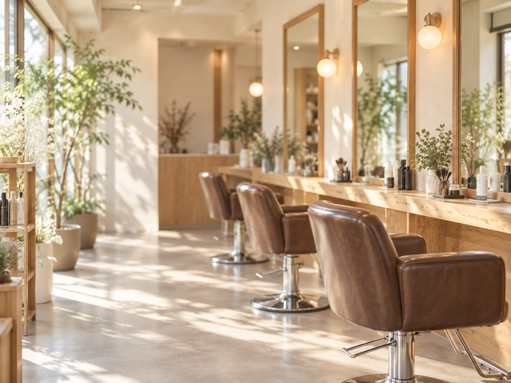

話して決める
抽象的な希望や迷いも、まずは言葉にするところから。
TENNOCHO / YOKOHAMA
希望を言葉にしきれない日も、髪の状態や暮らし方まで見ながら。
一緒に考えて、無理なく続くスタイルへ整えます。
※掲載ビジュアルはイメージです。

抽象的な希望や迷いも、まずは言葉にするところから。
その日の見た目だけでなく、伸びた後や家での扱いやすさまで。
地域の美容室らしい温かさで、年齢やシーンを問わず相談しやすく。
WHY PAPEPO
髪型を決める前に、まずは話すことから。なりたい雰囲気、扱いにくいところ、朝にかけられる時間まで。
今の髪を見ながら、一緒に考えて、無理なく続けられる形へ。サロンを出たあとも扱いやすいことまで大切にします。
CONSULTATION
なりたい雰囲気、困っていること、普段のお手入れ。まとまっていなくても、そのまま聞かせてください。
髪の状態や今の形を確認し、できること・気をつけたいことを整理します。
スタイルや施術を押しつけず、仕上がりとその後の扱いやすさを考えながら方向を決めます。
STYLE & SERVICE
髪の状態と、なりたい雰囲気に合わせて。必要なメニューを一緒に選びます。
※掲載ビジュアルはAI生成のイメージです。実際の施術例・スタッフ・お客様の写真ではありません。
伸びてもまとまりやすく、朝のセットも軽やかに。
色味に迷っても大丈夫。相談しながら似合う方向へ。
髪の状態を見ながら、毎日が扱いやすいストレートへ。
カットやカラーと一緒に。髪と気分を心地よく。
特別な日に。イメージを合わせて、似合うセットへ。
お子さまのカットも。家族で通いやすく。
WHY PAPEPO
サロンにいる時間だけでなく、その次の朝まで。PAPEPOが大切にしている3つのこと。
ぼんやりした希望でも大丈夫。髪のことも、暮らしのことも話しながら、一緒に似合う形を探します。
乾かして整いやすく、伸びてもまとまりやすく。忙しい日にも無理なく続くスタイルへ。
構えずに話せる温かな空気の中で、次の髪のことも、その先のことも相談できます。

SALON ATMOSPHERE
気取らず、構えず、髪のことを話せる場所。地域の美容室らしい親しみやすさの中で、ゆっくり相談できる時間を大切にしています。
STORE / ACCESS
予約・メニューの最新情報は掲載元ページでご確認ください。
Hot Pepper Beautyで確認